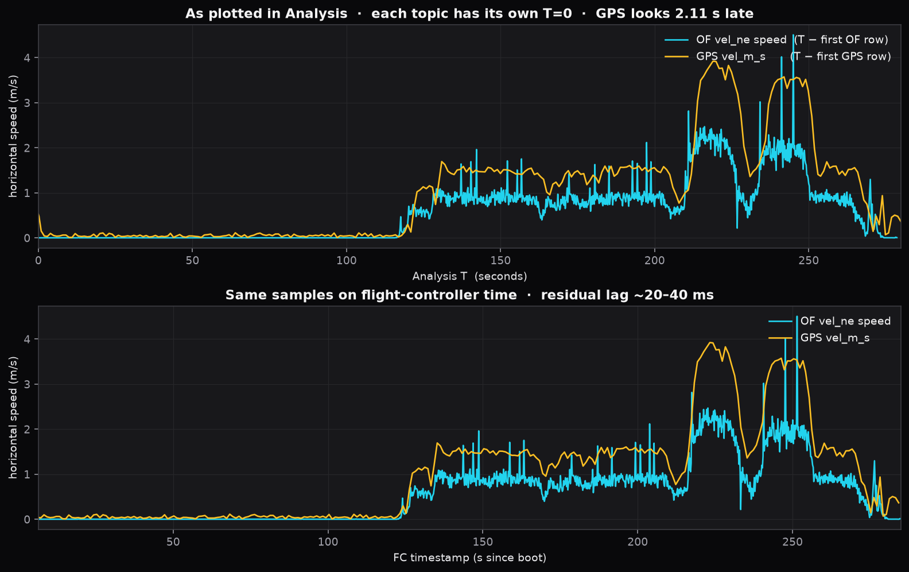
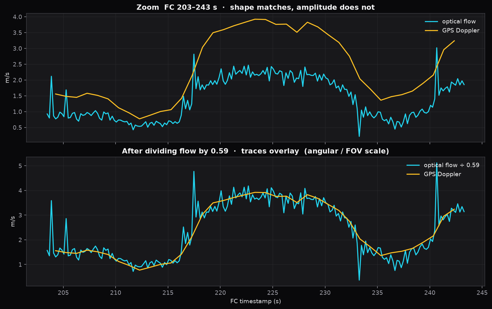
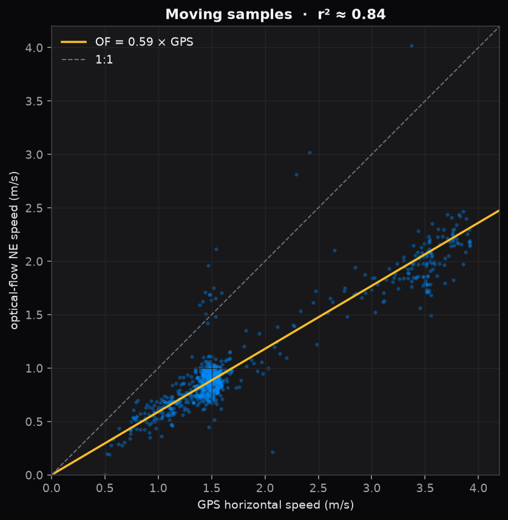
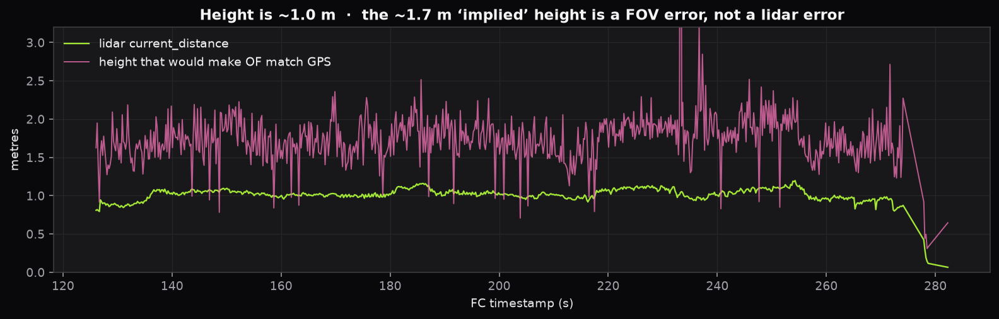

D2 walk at 1–2 m/s. Never armed. Design: ExperimentAnalysis night + D2 azure.
Verdict
Two independent effects. The ~2.1 s phase is Analysis plotting each topic from its own first sample, because this log has no ARM. The 0.59× magnitude is real: Holybro H-Flow’s PAA3905 is publishing ~59% of true radians. The module’s own AFBR-S50 ToF is ~1.02 m and is not the scale error. On flight-controller time the residual lag is 20–40 ms.
Time phase
2.11 s is per-topic T=0
No ARM, so ExperimentAnalysis sets T = (t − first_row_of_that_parquet). D2 sensor_gps starts at FC 4.365 s; estimator_optical_flow_vel.01 starts at 6.473 s. The same instant is drawn 2.11 s later on the GPS trace. Aligned on FC timestamps, lag is 20–40 ms (GPS slightly behind, as expected).
Magnitude
Flow is 0.59× GPS
NE flow matches GPS shape (moving r² ≈ 0.84 speed, 0.95 on N and E) at 59% of GPS speed. That is vel = flow_rad/s × H-Flow ToF with the ToF correct, so pixel_flow radians are 0.59 of truth. Equivalent to treating the PAA3905 42° FOV as ~25°, or a rad/pixel constant from a wider-FOV driver. D4 is also 0.59× — same module class.
OF / GPS scale
0.59
Need × 1.70 on PAA3905 radians
Plot offset GPS vs OF
2.11 s
GPS topic starts earlier
True sensor lag
20–40 ms
FC-time xcorr peak 0.98
Lidar while moving
1.02 m
H-Flow AFBR-S50, not VL53
What you are seeing in Analysis
Your pane plots D2 estimator_optical_flow_vel.01.vel_ne against D2 sensor_gps.vel_n/e. Those two parquet files do not share T=0. sensor_gps is also only ~1 Hz, so it looks like a delayed staircase next to 5 Hz flow.

Top: as drawn in Analysis. Bottom: same samples on the FC clock. Phase collapse, scale remains.
Why GPS looks 2 s behind flow
ulog_arm_us is null (arming_state stayed 1, motors never armed). Series time is first-row-relative per topic, not a shared drone clock.
flowchart LR
gps["D2 sensor_gps first row FC 4.365 s"] --> axis["Each channel T = 0 at its own first row"]
of["D2 OF vel.01 first row FC 6.473 s"] --> axis
axis --> look["Same FC instant: GPS drawn 2.11 s later"]
Switching Analysis to Manual sync does not fix this: Manual still uses first-sample per series. A shared per-drone origin (boot, GPS UTC, or first common timestamp) would line them up. Shifting the GPS trace left by 2.11 s already recovers the 20–40 ms residual.
The 0.59× scale survives clock alignment
PX4 does vel ≈ flow_rad/s × rangefinder. Gyro compensation and estimator math check out. Height is right. Angular rate is 0.59 of truth. Dividing flow by 0.59 overlays GPS.

FC 203–243 s, around the 3.9 m/s peak. Shape is the same walk; amplitude is a constant scale.

Moving samples (GPS > 0.5 m/s). Cloud sits on 0.59, not 1:1.
flowchart TD
pix["pixel_flow radians 0.59 of truth"] --> rate["flow_rate rad per s"]
gyro["gyro compensation OK"] --> rate
rate --> mul["times rangefinder about 1.02 m"]
mul --> body["vel_body"]
body --> yaw["rotate by yaw to NE"]
yaw --> ofne["vel_ne is 0.59 times GPS"]
gpsd["GPS Doppler NE"] --> truth["GPS speed is the walk speed"]
H-Flow identity in this log
The CAN module matches Holybro H-Flow, not a generic PX4FLOW. Do not use the 120° IR LED figure as the optical FOV — that is the illuminator, not the PAA3905.
H-Flow spec
In this ulog
Implication
PAA3905E1, viewing angle 42°, max 7.4 rad/s
vehicle_optical_flow.max_flow_rate = 7.4
Flow node is H-Flow firmware
AFBR-S50LV85D ToF, FoV 12.4° × 6.2°, 80 mm–30 m
One distance_sensor, h_fov = 6.0°, range 0.02–1.20 m
Height is the module’s own ToF. VL53 is enabled in params but not logging.
IR LED 120° (illuminator only)
Not a uORB FOV field
If a driver used 120° as camera FOV, flow would be too large. We see too small.
Radians are computed on the H-Flow MCU, then sent over CAN
Height hypothesis is closed
If the PAA3905 radians were perfect, matching 1.5 m/s GPS at this flow rate would need ~1.7 m AGL. The H-Flow ToF median while moving is 1.02 m; EKF z is −1.05 m. Same module, same 1 m carry.

Green is H-Flow AFBR-S50. Pink is the height that would be required for OF to equal GPS. Pink is a PAA3905 radian/FOV error, not a ToF error.
Evidence on D2 (GPS speed > 0.5 m/s)
Pair
Scale
r²
Read
OF.01 vel_ne vs sensor_gps Doppler
0.59
0.84
Same motion, scaled down
N and E separately vs GPS
0.58 / 0.59
0.95 / 0.95
Axes correct; not a yaw swap
compensated flow × range vs OF body
0.97
0.99
Estimator math is not the bug
EKF vx,vy vs GPS
0.58
0.93
EKF follows flow; GNSS vel not fused
D4 OF vs GPS (same walk)
0.59
0.80
Same camera class, same FOV error
Log conditions that matter
Flag / field
Value
Meaning
arming_state / armed
1 / 0 entire log
Handheld; no ARM T=0
sensor_gps rate
1.00 Hz
Your GPS trace is a 1 Hz stair; vehicle_gps_position is 7 Hz
estimator_optical_flow_vel.01
5.00 Hz
Same scale as instance .00
EKF2_GPS_CTRL
1 (lon/lat only)
GPS velocity bit off; cs_gnss_vel never 1
UAVCAN_SUB_FLOW / RNG
1 / 1
H-Flow over DroneCAN; SENS_EN_PAA3905=0
SENS_FLOW_SCALE / MINHGT / MAXR
absent
This FC firmware has no SENS_FLOW_* group (PX4 1.16 added SCALE)
UAVCAN_RNG_MIN
0.01 (Holybro wants 0.08)
Does not create a 0.59 scale
cs_in_air
almost never
EKF treats vehicle as on ground
flow quality
~148 / 255
Usable; not a texture dropout
sensor_optical_flow.distance_available
0
Range arrives as distance_sensor from the same H-Flow, not embedded in the flow msg
Ruled out
Wrong height — H-Flow ToF 1.02 m matches the carry; EKF z −1.05 m.
Yaw / axis swap on D2 — N and E each correlate at r² 0.95 with the matching GPS axis.
EKF mixing GPS and flow into a mushy velocity — GNSS vel is disabled; EKF just copies the too-small flow.
A 2 s sensor delay — that delay is the Analysis timebase. True lag is one GPS sample.
Bad GPS fix — 18 sats, fix 3–6, vel_ned_valid ≈ 1; Doppler matches the walk.
Your question
Latest PX4 on H-Flow: yes, but it is not the FC image
The missing calibration knob is only half of it. This FC log has no SENS_FLOW_SCALE (PX4 1.16 added it on the Pixhawk, range 0.5–1.5). That param multiplies flow after DroneCAN. The 0.59× is already in the radians H-Flow publishes. 1.5 still leaves ~1.13× error, so upgrading only the FC cannot finish the job.
H-Flow runs its own PX4 DroneCAN firmware on the STM32F412 (holybro_h-flow_default, board id 87). You can install the latest PX4 build of that target. Do not copy a Pixhawk .px4 onto the sensor. Holybro ships 1.15+; flash by putting holybro_h-flow_default on the FC SD-card root and rebooting (DroneCAN update). The node driver converts PAA3905 counts with 11.914 CPI/m → radians; that constant is the likely 0.59 source, and it lives on the sensor, not in SENS_FLOW_SCALE.
Where
Latest PX4 does
Fixes 0.59×?
Flight controller
Adds SENS_FLOW_SCALE (max 1.5)
Partial (need 1.70) — see below
H-Flow node holybro_h-flow_default
Same PAA3905 driver, DroneCAN publish
Yes, if you patch CPI→radian (preferred)
Your question
Filling 1.50 → 1.70
QGC’s 1.5 cap is metadata (@max 1.5). The FC just multiplies _flow_integral *= SENS_FLOW_SCALE. You need ×1.70 total. Put that factor in one place, not both.
Preferred — H-Flow node. In src/drivers/optical_flow/paa3905/PAA3905.cpp the counts become radians with PIXART_RESOLUTION = 11.914 (CPI per metre). Change it to 11.914 / 1.70 ≈ 7.01, or multiply pixel_flow by 1.70 after that line. Build holybro_h-flow_default, copy the binary to the FC SD-card root, reboot. Leave SENS_FLOW_SCALE = 1.0.
FC only, if you cannot rebuild the node. Upgrade the Pixhawk to PX4 1.16+. QGC will refuse 1.70. Either param set SENS_FLOW_SCALE 1.70 from the MAVLink shell, or raise @max to 2.0 in sensor_params_flow.c and rebuild the FC. Do not also patch the node or you will double-scale.
Do not split 1.5 × 1.13 unless you are stuck mid-migration. Two knobs drift and the next walk will look “fixed then broken.”
Check: same 10 m walk, FC timestamps, scale = mean(GPS speed / OF speed) while GPS > 0.5 m/s. Target 1.00 ± 0.05. This log is 1.70.
Your question
Why stock firmware is 40% off GPS
It is not a mysterious 1% datasheet typo. The H-Flow node uses a copied PixArt CPI that does not match this module’s lens. PX4 never compared flow to GPS Doppler on this walk, so the error shipped.
flowchart LR
paw["PAW3902 / PMW3901 driver 11.914 CPI per metre"] --> paa["PAA3905.cpp copies the same number"]
paa --> hflow["H-Flow 42° lens, fewer counts per ground metre"]
hflow --> rad["radians = counts / 11.914 / 39.37"]
rad --> low["Reported vel is 0.59 of GPS"]
PAA3905.cpp and PAW3902.cpp share the identical comment and PIXART_RESOLUTION = 11.914. Holybro’s H-Flow setup page still says PAW3902 for SENS_FLOW_MAXR. The optical constant was not re-measured on the PAA3905 + H-Flow lens.
CPI falls as FOV widens (same pixel array, more ground per count). 11.914 fits a ~25° stack. H-Flow’s PAA3905 is specified at 42°. 25/42 ≈ 0.60, which is the 0.59 we measured. Shape is right (r² 0.95); only the gain is wrong. That is a lens constant, not noise.
Stock bring-up checks quality, ToF range, and “it hovers.” This log fuses GNSS position but not GNSS velocity, so EKF horizontal speed silently follows the too-small flow. GPS as ground truth only shows up if you overlay the two, as you did.
PX4 added SENS_FLOW_SCALE in 1.16 after Ark Flow velocity oscillations — they already knew generic CPI is not module-true. The knob only goes to 1.5; this lens needs 1.70.
What to change on the vehicle
H-Flow computes radians on its STM32 and publishes them over DroneCAN. This flight-controller firmware has no SENS_FLOW_SCALE (that param appeared in PX4 1.16, range 0.5–1.5). 1.5 is still short of the 1.70 this log needs, so the durable fix is the H-Flow node FOV / rad-per-pixel, not a PX4 fudge that cannot reach the target.
Do not treat the 120° IR LED as camera FOV. Optical FOV is 42°. Using 120° would make flow too large; this log is too small.
Keep GPS Doppler as walk-speed truth. Height is already the H-Flow ToF at ~1.0 m.
Update H-Flow firmware (holybro_h-flow_default via DroneCAN / SD card). Holybro’s setup page still copies ARK Flow / PAW3902 constants for SENS_FLOW_MAXR; confirm the PAA3905 rad/pixel in the node firmware matches 42°, not a leftover wider-FOV constant (~70° would explain 42/71 ≈ 0.59).
If you cannot rebuild H-Flow, upgrade the FC to PX4 1.16+ and set SENS_FLOW_SCALE to 1.70 (shell / raise @max); QGC’s 1.5 cap is UI only. Do not combine with a node patch.
Set the Holybro-recommended FC params that are missing or off here: UAVCAN_RNG_MIN=0.08, SENS_FLOW_MINHGT=0.08, SENS_FLOW_MAXHGT=30, SENS_FLOW_MAXR=7.4, EKF2_OF_POS_* to the real lever arm. Those do not fix 0.59×.
Repeat a 10 m walk at taped 1.00 m AGL. Integrate GPS vel_n/e and OF vel_ne on FC timestamps. Target scale 1.00.
Do not “fix” it by enabling GPS velocity fusion (EKF2_GPS_CTRL bit 2). EKF would then track GPS and hide the H-Flow error.
In ExperimentAnalysis today: plot vehicle_gps_position (7 Hz) not sensor_gps (1 Hz), and subtract 2.11 s, or wait for a shared drone T=0.
Want a follow-up in ExperimentAnalysis?
A shared per-drone T=0 on unsynced logs would remove the 2.11 s plot offset. Queue if you want that change.